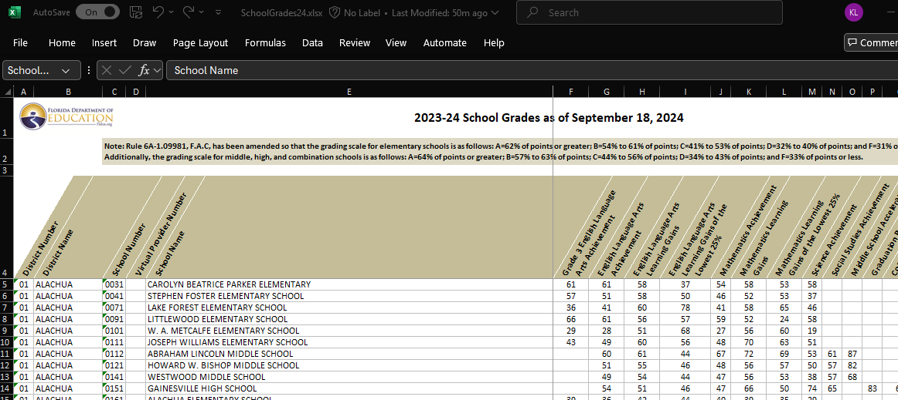

12 finding, exploring, cleaning, and combining data
Data science, oddly enough, begins not with R… but with data. There is no shortage of datasets available to analyze, and each can give rise to a host of interesting analyses and insights.
What do you want to study? Let’s begin by looking at schools
12.1 florida educational data
Florida, like many states, makes data on school quality publicly available. Schools are assessed, in part, on student performance (scores on comprehensive tests in fields such as English Language Arts). Schools are also assessed on measures such as whether this performance has increased across years, the percent of students who graduate in four years, and the percentage of students who pass Advanced Placement and related exams. You can learn more about these measures at https://www.fldoe.org/core/fileparse.php/18534/urlt/SchoolGradesOverview24.pdf).
The data itself are available in an Excel spreadsheet. Here’s a screenshot of the first few columns and rows of the file.

It’s apparent that the file is a little messy. As we saw in a prior chapter, we would like the first row of the dataset to include the variable (column) names: here, there are three rows of header prior to this. Further, many of the variable names include spaces, minus signs, and the like.
We will first download the data from the web (at this writing, you can find it at https://www.fldoe.org/file/18534/SchoolGrades24.xlsx). We will store it on our disk in a subdirectory of our project folder called ‘data.’
12.1.1 a digression: Slash, Windows and the world.
Once we download the data, we need to tell R where to find it. If we are working with an Rproject, we might keep everything - code, data, and output - in the same directory. But we often need or want to store data in a separate place, in which case you will need to specify a file path, which will include one or more slashes (and not the Guns N’ Roses guitarist kind).
In most of the computing world, including Macs, filepaths are delineated by forward slashes (“/”). On a Windows machine, they instead include backwards slashes (“\”). To further complicate matters, the backwards slash has a special significance as an ‘escape’ character - this means, as we will see briefly below as well as in the chapter on text analysis, that it tells the system to interpret the following character literally (for example, a comma is read as a comma) rather than symbolically (where a comma might be read as a separator between two objects).
In any operating system, we can locate files using relative paths (starting in your project directory) or absolute ones (starting in your computer’s root directory; see below). Relative paths generally work better, as you can use the code on multiple machines. But if you can’t find your datafile, try the absolute path as a kludge.
12.1.2 getting data from our machine into R
Ones we have specified the datapath, we can use the read_excel command, which is in the readxl library, which is part of the peripheral tidyverse (so you do not need to first install it on your computer). We’ll tell R to skip the first three lines of text.
We’ll continue the pipe with a simple command from the janitor package - which you will need to load on to your machine. That command gets rid of spaces in variable names and replaces them with camelCase or, the default, snake_case. (To see why you want to do this try omitting this line from your code).
# relative path with backward slashes replaced by forward ones
datadir <- "data/" # this is a relative path
# absolute path with backward slashes made literal with escapes
# datadir <- "C:\\Users\\me\\OneDrive\\GitRepos\\DSLA25\\data\\"
FloridaSchools <- read_excel(
# here, we could also just do
# "data/SchoolGrades24.xlsx"),
paste0(datadir, "SchoolGrades24.xlsx"),
skip = 3) |>
clean_names() 12.1.3 which ones are “high schools”?
There are a few ways that we could reduce this to just High Schools - one is to include only schools which report a graduation rate that is not a missing value; the other is to include just schools that are explicitly named “high school.” (We could also use both of these, or something else). Here, we will use the latter - filtering on schools which have “HIGH SCHOOL” in the school_name.
We then reduce the columns to a handful of measures of interest.
FloridaHighSchools <- FloridaSchools |>
# drop_na('graduation_rate_2022_23') |>
filter(str_detect(school_name,
"HIGH SCHOOL")) |>
select (district_number, district_name,
school_number, school_name,
english_language_arts_achievement,
mathematics_achievement,
science_achievement,
social_studies_achievement,
graduation_rate_2022_23,
grade_2024,
percent_of_economically_disadvantaged_students)
head(FloridaHighSchools)## # A tibble: 6 × 11
## district_number district_name school_number school_name english_language_art…¹
## <chr> <chr> <chr> <chr> <dbl>
## 1 01 ALACHUA 0151 GAINESVILL… 54
## 2 01 ALACHUA 0201 HAWTHORNE … 32
## 3 01 ALACHUA 0261 NEWBERRY H… 53
## 4 01 ALACHUA 0271 SANTA FE H… 56
## 5 01 ALACHUA 0411 PROFESSION… 64
## 6 01 ALACHUA 0421 EASTSIDE H… 47
## # ℹ abbreviated name: ¹english_language_arts_achievement
## # ℹ 6 more variables: mathematics_achievement <dbl>, science_achievement <dbl>,
## # social_studies_achievement <dbl>, graduation_rate_2022_23 <dbl>,
## # grade_2024 <chr>, percent_of_economically_disadvantaged_students <dbl>12.1.4 can we compute district (county) means from these data?
We can reduce the set of high schools to one line per district, with scores the simple means of all schools in the district.
FloridaHighSchoolsbyDistict <- FloridaHighSchools |>
# select(-grade, -school_name) |>
group_by(district_name) |>
summarise_if(is.numeric, mean, na.rm=TRUE)These average scores should be viewed with skepticism, because it treats small and large schools as equal. Consider graduation rates: If a district has just two schools, one with just 10 students (and graduates all of them), and a larger school with 990 students (but graduates only half - 495 - of them), we would get an estimated graduation rate of 75% ((1.0 + .5)/2). But actually, the district-wide graduation rate would be 50.5%. School enrollment data is needed to accurately estimate district effects from individual schools.
12.1.5 estimating school enrollments
At this writing (March 2025), I can’t find a dataset on Florida HS enrollments that is free, recent, easy to pull down, and reasonably comprehensive. For our purposes, we can work with an estimate of this: There are measures of school size in football league data (https://fhsaa.com/news/2023/12/21/football-classifications-available-for-2024-25-2025-26.aspx).
The names for schools there are formatted differently from our other dataset, so this will take a little work. We will first read in the data, then estimate enrollments based on the class of the school (Rural, 1R, 1A, 2A, 3A, 4A, 5A, 6A, 7A).
Can you describe what is happening in each line of code in this section?
Note the use of the escape character in this chunk
EnrollmentsFromFHSAA <- read_excel(
paste0(datadir, "Football_2024_26.xlsx"),
skip = 1) |>
clean_names()
head(EnrollmentsFromFHSAA)## # A tibble: 6 × 4
## school_name class region district
## <chr> <chr> <chr> <chr>
## 1 All Saints' (Winter Haven) Independent Independent Independent
## 2 Alonso (Tampa) 7A 2 7
## 3 American (Hialeah) 4A 4 16
## 4 American Heritage (Delray Beach) 2A 3 12
## 5 American Heritage (Plantation) 4A 4 15
## 6 Anclote (Holiday) 3A 3 9EnrollmentsFromFHSAA <- EnrollmentsFromFHSAA |>
separate(col = "school_name",
into = c("school_name", "school_place"),
sep = "\\(", extra = "merge") |>
mutate (est_enrollment =
case_when(
class == "Rural" ~ mean(111,558),
class == "1R" ~ mean(111,558),
class == "1A" ~ mean(61,643),
class == "2A" ~ mean(644,1166),
class == "3A" ~ mean(1167,1542),
class == "4A" ~ mean(1543,1822),
class == "5A" ~ mean(1823,2135),
class == "6A" ~ mean(2136,2512),
class == "7A" ~ mean(2512,4627),
TRUE ~ NA)) |>
mutate(school_name = toupper(school_name)) |>
mutate(school_place = str_remove(school_place,"\\)"))## Warning: Expected 2 pieces. Missing
## pieces filled with `NA` in 192
## rows [8, 18, 21, 22, 24, 26,
## 32, 33, 44, 46, 47, 49, 53, 57,
## 59, 60, 62, 67, 73, 81, ...].When we run this chunk, we get a warning. What is it about? Is it ok?
12.2 combining datasets
The enrollment data are now in the EnrollmentsFromFHSAA dataset. We first edit the school names from the FloridaHighSchools file to see if we can get them to match. Then we try to merge (left join) these with the FloridaHighSchools data, using the school_name variable as the key.
FloridaHighSchools <- FloridaHighSchools |>
mutate(school_name =
str_replace(school_name,
"JUNIOR/SENIOR HIGH SCHOOL","")) |>
mutate(school_name =
str_replace(school_name,
"MIDDLE/HIGH SCHOOL","")) |>
mutate(school_name =
str_replace(school_name,
"SENIOR HIGH SCHOOL","")) |>
mutate(school_name =
str_replace(school_name,
"HIGH SCHOOL",""))
FloridaHighSchools2 <- FloridaHighSchools |>
left_join(EnrollmentsFromFHSAA, by = "school_name")## Warning in left_join(FloridaHighSchools, EnrollmentsFromFHSAA, by = "school_name"): Detected an unexpected
## many-to-many relationship
## between `x` and `y`.
## ℹ Row 38 of `x` matches
## multiple rows in `y`.
## ℹ Row 187 of `y` matches
## multiple rows in `x`.
## ℹ If a many-to-many
## relationship is expected, set
## `relationship =
## "many-to-many"` to silence
## this warning.But when we do this, we get another warning message. Why is it there?
12.2.1 challenges in joining datasets
In each of the two datasets, there are duplicate names - for example, there are two “Atlantic” High Schools in the both the Florida High School (FHS) and the Florida High School Athletic Association (FHSAA) datasets. We can see this by looking at the output of the following commands:
SchoolsWithSameNamesInFHS <- FloridaHighSchools |>
group_by(school_name) |>
filter(n() > 1) |>
# select (school_name, district_name) |>
ungroup() |>
arrange(school_name)
SchoolsWithSameNamesInEnrollments <- EnrollmentsFromFHSAA |>
group_by(school_name) |>
filter(n() > 1) |>
# select (school_name, school_place) |>
ungroup() |>
arrange(school_name)There are 12 schools (6 pairs) in the FHS data, and 26 schools (13 pairs) in the FHSAA data. Ten of these schools are in common across the two sets, the remainder are unique to one or the other.
12.2.2 some approaches to fixing the data
In dealing with large datasets, it is fairly common that code will work correctly for a large majority of the cases, and that creativity is needed to efficiently fix the remainder. Here, there are at least four (non-mutually-exclusive) approaches that might work. In decreasing order of comprehensiveness:
The first approach would be to dig deeper, and to find another source for the school enrollment data. The data we have are imperfect in at least three ways:
Enrollment data are missing for many schools (i.e., “independent” schools).
Many schools on this list do not show up in the FHS list
The enrollment data we have from these schools are estimates, not actual counts
The second approach would be to find a geographic dataset that includes towns and counties, then to use this as a key to join our two high school files. If we were working with a larger dataset, this would be worthwhile to try.
The third approach would be to manually edit the datasets so that we could include the schools with multiple names.
The fourth approach would be to run an initial analysis on the data we have, putting aside the duplicate schools. In the event that the results warrant closer analysis, we could then move to a more comprehensive solution. This is the place to begin:
12.2.2.1 the simplest approach
In order to merge the data, we first need to make sure that there are no spaces or tabs in the “school_name” variable that will join the datasets.
SchoolsWithUniqueNamesInFHS <- FloridaHighSchools |>
group_by(school_name) |>
mutate(school_name = str_trim(school_name)) |>
filter(n() == 1) |>
ungroup()
SchoolsWithUniqueNamesInEnrollments <- EnrollmentsFromFHSAA |>
group_by(school_name) |>
mutate(school_name = str_trim(school_name)) |>
filter(n() == 1) |>
ungroup()
FloridaHighSchools2 <- SchoolsWithUniqueNamesInFHS |>
left_join(SchoolsWithUniqueNamesInEnrollments,
by = "school_name")We compute the estimated graduation rate for districts (adjGradRate) by weighing schools by their estimated enrollments as follows
12.2.2.2 adding in the schools with duplicate names
If we wanted to examine the high school enrollment and graduation data more closely, we can manually rename the duplicate school names. Here’s one approach:
Begin by cleaning up the white space in the school name field (str_trim). Then, in the FHS data, rename schools by concatenating (str_c) school name and district name. Then manually edit the relevant cases in the FHSAA data (using mutate + case_when), and finally concatenating school and district name here as well.
FixNamesInFHS <- SchoolsWithSameNamesInFHS |>
mutate(school_name = str_trim(school_name)) |>
mutate(school_name = str_c(school_name, "_",district_name))
FixNamesInFHSAA <- SchoolsWithSameNamesInEnrollments |>
mutate(school_name = str_trim(school_name)) |>
mutate(district_name = case_when (
school_place == "Delray Beach" ~
"PALM BEACH",
school_place == "Port Orange" ~
"VOLUSIA",
school_place == "Fort Myers" ~
"LEE",
school_place == "Kissimmee" ~
"OSCEOLA",
school_place == "Oakland Park" ~
"BROWARD",
school_place == "St. Petersburg" ~
"PINELLAS",
school_place == "Riverview" ~
"HILLSBOROUGH",
school_place == "Sarasota" ~
"SARASOTA",
school_place == "Sanford" ~
"PINELLAS",
school_place == "Seminole" ~
"SEMINOLE",
TRUE ~ "")
) |>
mutate(school_name = str_c(school_name, "_",district_name)) |> select(-district_name)then we add these data back in with the FHS and FHSAA data and rerun the analysis
FHSdata <- SchoolsWithUniqueNamesInFHS |>
bind_rows(FixNamesInFHS)
FHSAAdata <- SchoolsWithUniqueNamesInEnrollments |>
bind_rows (FixNamesInFHSAA)
FloridaHighSchools3 <- FHSdata |>
left_join(FHSAAdata,
by = "school_name")
GradCountsRates <- FloridaHighSchools3 |>
mutate(est_Ngrads =
round(est_enrollment * .01 *
graduation_rate_2022_23),0) |>
select(district_name, est_enrollment, est_Ngrads) |>
group_by(district_name) |>
summarise_if(is.numeric,sum, na.rm = TRUE) |>
mutate(adjGradRate = est_Ngrads / est_enrollment)12.2.3 estimating the relationship between economic disadvantage and graduation rates
We now have two approaches to estimating graduation rates at the level of school districts - the first is based on the simple average by schools, the second is based on the estimated enrollment data. How do these relate to each other and to other measures in the data such as economic disadvantage?
Here, we join the two district-level files, rename our two graduation measures, and compute the correlations among the measures. We use the correlate function (in the corrr package), which makes the correlation matrix into a tibble, round the entries to two decimal places, and make into a table, which we format using the kable function from the kableExtra package.
FloridaHighSchoolsbyDistict |>
left_join(GradCountsRates) |>
select(graduation_rate_2022_23,
adjGradRate,
percent_disadvantaged_students = percent_of_economically_disadvantaged_students) |>
rename(grad_rate_raw = graduation_rate_2022_23,
grad_rate_weighted = adjGradRate) |>
correlate() |>
mutate_if(is.numeric, round, 2) |>
kable(table.attr = "style='width:30%;'") |>
column_spec(1:4, width = "14em") |>
kable_styling(font_size = 12)## Joining with `by =
## join_by(district_name)`
## Correlation computed with •
## Method: 'pearson' • Missing
## treated using:
## 'pairwise.complete.obs'| term | grad_rate_raw | grad_rate_weighted | percent_disadvantaged_students |
|---|---|---|---|
| grad_rate_raw | NA | 0.88 | -0.51 |
| grad_rate_weighted | 0.88 | NA | -0.38 |
| percent_disadvantaged_students | -0.51 | -0.38 | NA |
The two measures of graduation rates are similar but not identical (r = .88), and each is negatively associated with economic disadvantage (rs of -.38 and -.51). These correlations are high.
12.3 recap / on joining files
In this chapter, we’ve examined Florida High School data and found an (expected) negative relationship between economic disadvantage and graduation rates. We also saw a picture of the guitarist from the hair band Guns ‘n’ Roses. We used a number of functions, such as select, filter, mutate, group_by, summarise, and case_when, that we also considered in the last chapter. We also used some new libraries, including readxl, corrr, and kableExtra, and their functions read_excel, correlate, and kable.
The core of this chapter is to introduce some of the challenges of combining files, including both (a) the frequent need to wrangle datasets so that they can be correctly put together and (b) the use of the left_join function. The left_join function is one of many different ways of joining data.
In our left_join, we kept all of the rows in the first dataset (x, FHSdata), and linked them to y (FHSAAdata) if and only if they have a match on the key variable (school_name). In a right join, we keep all of y, and rows in x if and only if they have a match in y. So we could also have written our code as
FloridaHighSchools3 <- FHSAAdata |>
right_join(FHSdata,
by = “school_name”)
There are also inner_joins (which can be thought of as the intersection of the two datasets, including only rows in each dataset which match) , and full_joins (unions, which keep all rows in both datasets). And anti_joins include only the rows in x which do not have a match in y. We will return to anti-joins in our discussion of text analysis.
In combining datasets, joins are but one approach. We can also simply bind files together, without regard for a common key. Here, (and in the last chapter) we used bind_rows to add new observations to an existing dataset - this is typically used when two datasets have the same set of variables. Finally, bind_cols can be used to add new variables when two datasets have the same observations and in the same order.